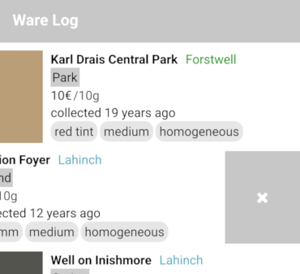

In this step I would like to change to a different accent color. As list items will have colored rectangles as part of their layout, I will choose a neutral but light grey tone, #c7c7c7.
For the App component by Felgo, there is the onInitTheme property and the Theme component. The tintColor in Theme.colors would correspond to the accent color, so the following lines are enough to set it:
App {
onInitTheme: {
Theme.colors.tintColor = "#c7c7c7"
}
...
}
As this grey is a bit too light for buttons, or more generally for UI elements with text that needs to be read more often and quickly, don't use the tint color for them, but a slightly darker grey:
Theme.appButton.backgroundColor = "#a3a3a3"
Another property that can be set is the shadow height of the navigation bar. To remove the shadow, add the following line:
Theme.navigationBar.shadowHeight = 0
Now both the navigation bar and the swipe button have the tint color set to grey, and the navigation bar has the shadow removed.

When we use buttons later on, they should show the slightly darker grey as their background color.